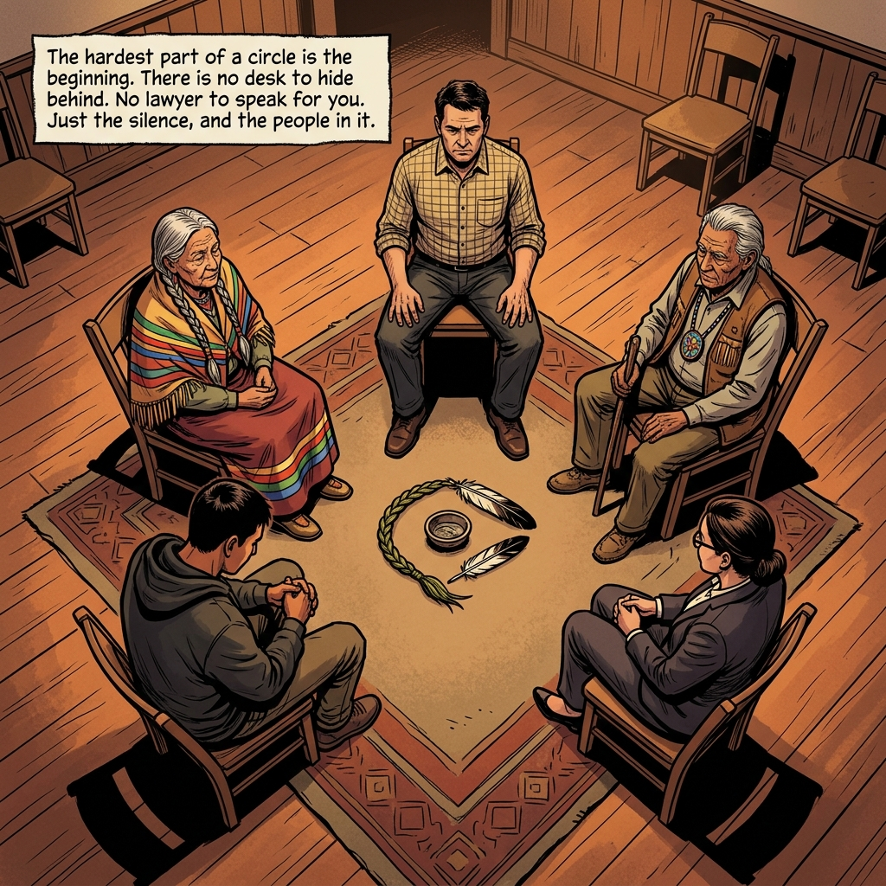

How does our criminal justice system treat Indigenous peoples? Today we begin an audit comparing historical policies, classroom data, and community-led alternatives through the story of a Mi'kmaw youth in Cape Breton.
Different treatment is required to achieve equal results. For Gladue Rights, courts must consider colonial factors (residential school trauma, reservation displacements) that bring an Indigenous person before the bench.
The legacy of assimilation under Canada's Indian Act has created five compounding pillars of systemic disadvantage:
Disconnection from traditional language, values, and community identity.
Forced relocation from traditional lands, crippling economic self-sufficiency.
Legacies of abuse and lost parenting skills from Residential Schools.
Risk checklists that penalize poverty (unemployed, no address) as "criminogenic risk."
Chronic lack of reserve housing, jobs, and social support services.
In 2017, Indigenous women made up 36% of federal female inmates. By 2026, they account for over 50% of federal admissions, despite making up only 5% of the general population. Changing court laws is not enough without addressing social roots.

Autosave is active. Every keystroke is saved locally and synced to the classroom spreadsheet every 5 seconds. Make sure you select your name and input your PIN before typing.